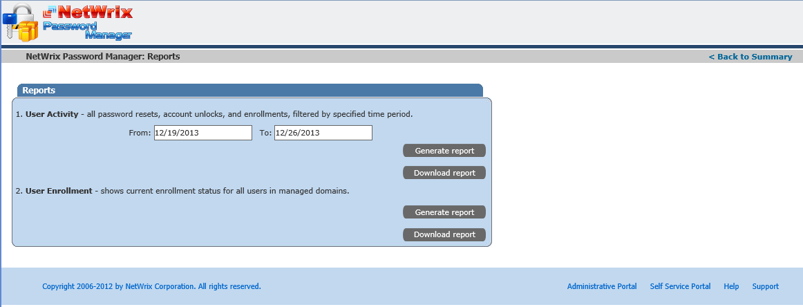
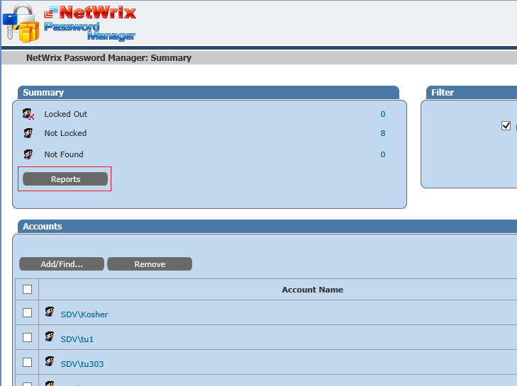
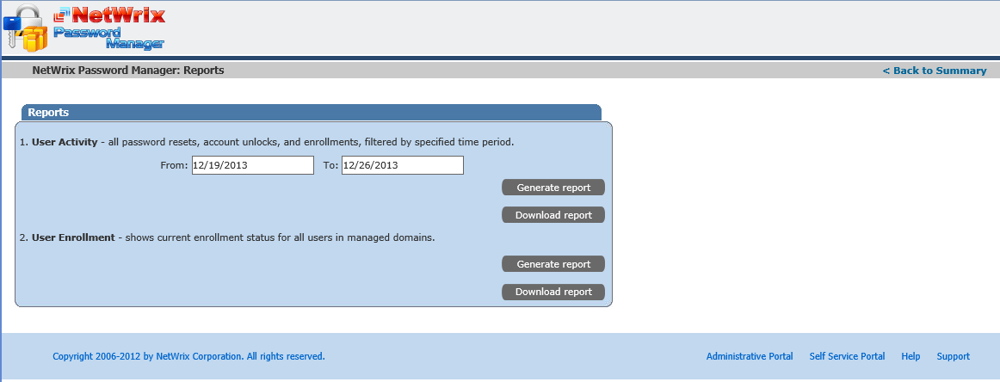
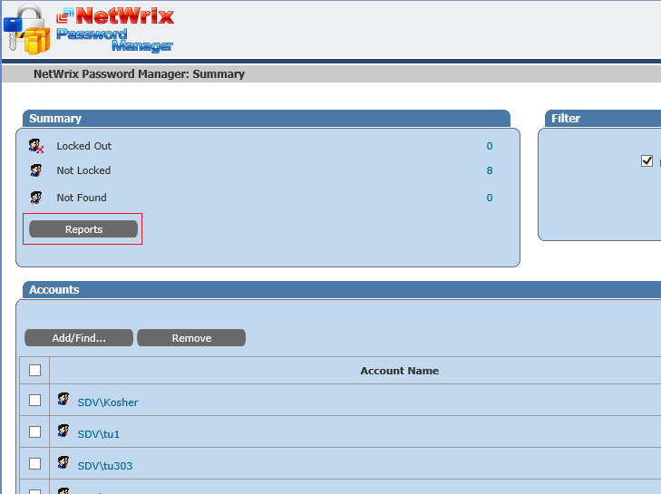

Password Manager has two reports that might be usefull for monitroing:
User Activity report, that shows all activities of user within the
application - enrollment, successful and failed password reset and change attempts, unlock
operations - between two specified dates. User Enrollment report, that
queries all users of all manged domains and shows if they are enrolled or not. It also shows
the OU that a user belongs to and the e-mail address specified during enrollment (is only
asked if Additional authentication feature is enabled) Reports can be generated online, or
downloaded in .csv format

To get to the Reports page, log in to the Helpdesk portal, and click Reports button under Summary


To get to the Reports page, log in to the Helpdesk portal, and click Reports button under Summary
